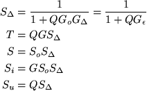

|
You are here : Control
System Design - Index | Book Contents |
Chapter 15
15. SISO Controller Parameterisations
Preview
Up to this point in the book we have seen many different methods for
designing controllers of different types. On reading all of this, one
might be tempted to ask if there wasn't some easy way that one could
specify all possible controllers that, at least, stabilized a
given system. This sounds, at first glance a formidable task. However,
we will show in this chapter that it is actually quite easy to give a
relatively straightforward description of all stabilizing controllers
for both open loop stable and unstable linear plants. This leads to an
affine parameterization of all possible nominal sensitivity functions.
This affine structure, in turn, gives valuable insights into the control
problem and opens the door to various optimization based strategies for
design. The main ideas presented in this chapter include
- motivation for the affine parameterization and the idea of open
loop inversion
- affine parameterization and Internal Model Control
- affine parameterization and performance specifications
- PID synthesis using the affine parameterization
- control of time delayed plants and affine parameterization.
Connections with the Smith controller.
- interpolation to remove undesirable open loop poles
Summary
- The previous part of the book established that closed loop
properties are interlocked in a network of trade offs. Hence, tuning
for one property automatically impacts on other properties. This
necessitates an understanding of the interrelations and conscious
trade-off decisions.
- The fundamental laws of trade-off presented in previous chapters
allow one to both identify unachievable specifications as well as to
establish where further effort is warranted or wasted.
- However, when pushing a design maximally towards a subtle
trade-off, the earlier formulation of the fundamental laws falls
short because it is difficult to push the performance of a design by
tuning in terms of controller numerator and denominator: The impact
on the trade-off determining sensitivity-poles and zeros is very
nonlinear, complex and subtle.
- This shortcoming raises the need for an alternative controller
representation that
- allows one to design more explicitly in terms of the
quantities of interest (the sensitivities),
- makes stability explicit, and
- makes the impact of the controller on the trade-offs explicit.
- This need is met by the affine parameterization, also known as Youla
parameterization
- Summary of results for stable systems:
-
C = Q(1 - QGo)-1,
where the design is carried out by designing the transfer
function Q
- Nominal sensitivities:
- Achieved sensitivities (See the definitions of modeling
errors in section 3.9):

- Observe the following advantages of the affine parameterization:
- nominal stability is explicit
- the known quantity Go and the
quantity sought by the control engineer (Q) occur in the
highly insightful relation To= QGo
(multiplicative in the frequency domain); whether a designer
chooses to work in this quantity from the beginning or prefers
to start with a synthesis technique and then convert, the simple
multiplicative relation QGo provides
deep insights into the trade-offs of a particular problem and
provides a very direct means of pushing the design by shaping Q
- the sensitivities are affine in Q, which is a great
advantage for synthesis techniques relying on numerical
minimization of a criterion (see Chapter 16 for a detailed
discussion of optimization methods which exploit this
parameterization)
- The following points are important to avoid some common
misconceptions:
- the associated trade-offs are not a consequence of the affine
parameterization: they are perfectly general and hold for any
linear time invariant controller including LQR, PID, pole
placement based,
 ,
etc. ,
etc.
- we have used the affine parameterization to make the general
trade-offs more visible and to provide a direct means for the
control engineer to make trade-off decisions; this should not be
confused with synthesis techniques that make particular choices
in the affine parameterization to synthesize a controller
- the fact that Q must approximate the inverse of the
model at frequencies where the sensitivity is meant to be small
is perfectly general and highlights the fundamental importance
of inversion in control. This does not necessarily mean
that the controller, C, must contain this
approximate inverse as a factor and should not be confused with
the pros and cons of that particular design choice
- PI and PID design based on affine parameterization.
- PI and PID controllers are traditionally tuned in terms of
their parameters.
- However, systematic design, trade-off decisions and deciding
whether a PI(D) is sufficient or not, is significantly easier in
the model-based affine structure.
- Inserting a first order model into the affine structure
automatically generates a PI controller.
- Inserting a second order model into the Q-structure
automatically generates a PID controller.
- All trade-offs and insights of the previous chapters also
apply to PID based control loops.
- Whether a PI(D) is sufficient for a particular process is
directly related to whether or not a first (second) order model
can approximate the process well up to the frequencies where
performance is limited by other factors such as delays, actuator
saturations, sensor noise or fundamentally unknown dynamics.
- The first and second order models are easily obtained from
step response models (Chapter 3).
- The chapter provides explicit formulas for first-order,
time-delay, second order and integrating processes.
- Using this method, the control engineer works directly in
terms of observable process properties (rise time, gain, etc)
and closed loop parameters providing an insightful basis for
making trade-off decisions. The PI(D) parameters follow
automatically.
- Since the PI(D) parameter formulas are provided explicitly in
terms of physical process parameters, the PI(D) gains can be
scheduled to measurably changing parameters without extra effort
(it is possible, for example, to schedule for a speed-dependent
time-delay).
- The approach does not preempt the design choice of canceling
or shifting the open-loop poles - both are possible and
associated with different trade-offs.
- Summary of results for systems having time-delays:
- The key issue is that delays cannot be inverted.
- In that sense, delays are related to NMP plant zeros, which
cannot be stably inverted either.
- A delay of magnitude T, causes similar trade-offs as an
unstable zero at s=T/2.
- An early controller conceived to deal with the non-invertibility
of delays is the famous Smith-predictor.
- The trade-offs made in the Smith-predictor can be nicely
analyzed in the affine structure. Indeed, the structures are
very similar. Caution should be exercised, however, not to
confuse the generic controller representation of the affine
parameterization with the particular synthesis technique of the
Smith-predictor.
- Summary of results for unstable systems:
- All stabilizing controllers for an unstable plant have the
form
& where Qu(s) is any proper
rational stable transfer function.
- Polynomials Ao(s), Bo(s),
E(s), P(s) and L(s)
satisfy
| Ao(s)L(s) + Bo(s)P(s) = E(s)F(s) |
where E(s) and F(s) are polynomials
of suitable degrees which are arbitrary, save that they must
have desirable zeros.
- Any stabilizing controller can be used to obtain an initial
set of polynomials {E(s), P(s), L(s)}
|